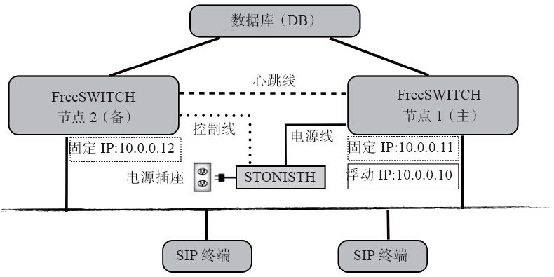

15.10 HA
HA（High Availability）即高可用（可靠）性。在对稳定性要求非常高的场合，需要一定的机制来保证服务的稳定。一般的HA都是用双机（或多机）实现的，它的理论是，根据概率来计算，如果一台机器的稳定性（不出故障的概率）为99%，则两台机器的稳定性就是99.99%。
FreeSWITCH对HA有内置的支持，如果相互配对的两个FreeSWITCH中有一个崩溃或因硬件故障宕机，则另一台能在几秒内迅速接替它的工作，保证正在进行的通话不断话（正在接续的通话可能受影响）。下面我们先来做一个实验。
15.10.1 崩溃恢复实验
为了使用实验简单，我们先用一个FreeSWITCH实例来做实验。首先，我们配置好一个FreeSWITCH实例，用一个SIP客户端发起一路通话呼叫9664听保持音乐；然后让FreeSWITCH崩溃，这时候客户端会短暂地听不到声音；接着，我们重启FreeSWITCH并恢复崩溃前的通话，客户端上就又重新听到的声音。
为了让FreeSWITCH能在崩溃后恢复，FreeSWITCH需要将当前通话的信息写到数据库中。默认的SQLite数据库就可以使用，我们只需要配置Sofia Profile（internal）中如下一个参数：
<param name="track-calls" value="true"/>
配置好该参数后，FreeSWITCH会将通话的当前状态实时写到数据库里，我们先重启一下该Profile使该参数生效：
freeswitch> sofia profile internal restart
然后，用一个SIP客户端呼叫9664，听到保持音乐后，我们用下面的命令让FreeSWITCH崩溃：
freeswitch> fsctl crash
当然，上述命令是一个测试的命令，与“kill-9<pid>”是类似的。总之，至此FreeSWITCH就崩溃了。然后，我们重启FreeSWITCH，重启完成后，再执行：
freeswitch> sofia recover
Recovered 1 call(s)
该命令是最关键的。通过它，FreeSWITCH就会从数据库中读出崩溃前的通话信息，并恢复。
当然，该实验能成功的前提是你做得足够快（通过几秒或几十秒），因为有些SIP客户端在长时间收不到RTP流后，就会自己挂机，客户端挂机了，当然在FreeSWITCH端再恢复也没什么用了。
其实这里能恢复的原理很简单。由于在SIP会话建立后，电话进入正常通话中，一般在挂机之前再没有SIP消息交互了，只有RTP用于传送媒体数据。如果FreeSWITCH崩溃，则RTP数据只是短暂不能收发，而由于RTP是UDP的，因此客户端感觉不到FreeSWITCH崩溃而仍然发送RTP流（也许有一点点感觉就是暂时收不到RTP流了，而短时间内收不到RTP流的话客户端也不会抱怨）。因而在FreeSWITCH恢复后，电话马上就恢复了。当然，FreeSWITCH在恢复通话后，会重新发一个re-INVITE消息，以确定对方是否还在。
 注意
注意
我们这里讨论的崩溃恢复是假设SIP采用UDP的情况。如果SIP采用TCP方式连接，由于TCP是面向连接的协议，就不能保证总是能够恢复成功（跟对端和网络环境有关）。
15.10.2 HA简介
上一节我们讲了FreeSWITCH中崩溃恢复的原理和一些细节，严格上来说还不算HA，但它为HA的实现打下了基础。其实，HA一般是为了解决硬件问题的。因为，如果软件有问题，如FreeSWITCH崩溃后，可以用另外一个监控程序迅速重启并恢复通话。但如果硬件发生问题，上述方式就不能解决了，因而需要配置另外一台机器，在检测到其中一个失败后便立即接替服务。
为了能使一台主机能完全接替另一台主机提供同样的服务，两台主机必须完全相同。下面我们以两台FreeSWITCH主机为例来说明一下。
如图15-13所示，有两个FreeSWITCH节点，分别为节点1和节点2，它们分别具有IP地址10.0.0.11和10.0.0.12。其中，节点1为主用节点，因此它绑定了一个浮动IP 10.0.0.10。对于SIP终端来讲，它们不知道节点1和节点2的存在，只知道它在跟一个IP地址是10.0.0.10的SIP服务器进行通信。现在，IP地址10.0.0.10绑定在节点1上，如果任何时候节点2发现节点1故障，它就会将IP地址10.0.0.10绑定到自己的网卡上，并接替节点1继续进行工作。

图15-13 FreeSWITCH HA拓扑结构示意图
为了能使节点2能实时监测到节点1的健康状态，两者之间使用心跳线连接，并定期交换心跳（Heartbeat）消息。如果节点2在规定的时间内（通常几秒内）收不到对方的心跳，则认为节点1故障，并触发倒换过程，自己变为主节点。在物理上，心跳线可以用串口线，也可以用以太网线。
如果节点1在一段时间内恢复，这时候一般有两种选择：①它自动变为备用节点，下次节点2再出故障时它再变为主节点；②它依然作为主节点，节点2则变回从节点。具体的倒换策略视具体应用情况而定。
为了能使节点2能恢复节点1上正在进行的通话，两个节点需要连接到一个共享的数据库 [1] 。
可以想象，节点2对节点1健康状况的判断仅依靠心跳线，如果心跳线出现故障，则可能引起错误的判断，造成不必要的主备切换。更严重的是，网络上会出现两个主机具有相同的IP地址（即浮动IP为10.0.0.10），两台主机也可能同时访问数据库中的共享资源引起数据混乱。这种可能的错误称为脑裂 [2] 。为了预防脑裂的发生，一般有以下两种解决办法：
·再增加一条心跳线，以降低由于心跳故障引起的错判；
·增加STONITH [3] 设备，强制关闭另一台设备的电源。
当然，到这里读者也可以看到，如果节点1真的发生故障了，那么节点2检测到以后便会启动倒换过程。如使用STONITH工具关掉对方节点的电源、将浮动IP绑定到本机上、启动FreeSWITCH、恢复通话等。这些工作可以使用一些脚本来解决，也可以使用专用的CRM [4] 软件解决。FreeSWITCH可以很好地配合各种CRM软件工作，不过，在本书中，限于篇幅，我们就不涉及了。
需要指出，本节讲的是通用的HA的基本知识，我们以FreeSWITCH作为例子进行讲解只是为了能方便直观一些，其他的系统HA也与之类似，如在数据库HA系统中，可以把这里的FreeSWITCH节点看做是数据库节点，而这里的共享数据库资源就可以看作是数据库HA系统中的共享存储（磁盘阵列、SAN存储等）。
15.10.3 双机HA实现细节及需要注意的问题
由于搭建实际的演示环境颇为复杂，而且把各项步骤都讲明白也需要很大的篇幅，因此笔者就不在这里带领大家做具体的实验了，而是仅讨论一下双机HA的实现细节及需要注意的问题。如果读者有其他系统的HA实施经验，应该能很容易的实现；如果没有其他系统的HA实施经验的话，最好多学习和参考一下其他系统的HA，再来做FreeSWITCH的实验。
首先，我们需要两台一模一样的主机，安装操作系统（我们仅讨论Linux）和必要的软件，并安装FreeSWITCH。然后安装心跳软件。一般来说，可选的心跳软件有Keepalived和Heartbeat，前者比较古老，后者比较新，它们都能在检测到心跳失败时调用相关的脚本切换IP和FreeSWITCH。
当发生主备机切换时，需要在备机上启动FreeSWITCH，然后执行sofia recover命令，以恢复话务。这些过程都可以写一个简单的Shell脚本来实现，也可以直接配置FreeSWITCH（在vars.xml中）在系统启动时自动执行sofia recover，如：
<X-PRE-PROCESS cmd="set" data="api_on_startup=sofia recover"/>
当然，FreeSWITCH的过程可能会比较慢，因而会延长总体切换的时间。为了节省启动时间，我们可以使用FreeSWITCH的StandBy模式，即先在备机上启动FreeSWITCH，让其什么也不干，等到IP切换过来后就可以立即执行sofia recover以恢复业务。为了能支持这种模式，需要修改操作系统内核参数，允许FreeSWITCH监听在“不存在”的IP地址上（因为以后要使用的浮动IP现在还绑定在主用节点上，备用节点上还没绑定）。在Linux上可以使用如下命令实现：
echo 1 > /proc/sys/net/ipv4/ip_nonlocal_bind
上述命令会动态更改内核参数，但如果想使该参数在系统重启后也生效，需要将配置选项写到系统配置文件中，如：
echo
“net.ipv4.ip_nonlocal_bind=1
” >> /etc/sysctl.conf
当然，为了能正常恢复话务，还需要在FreeSWITCH的Sofia Profile中配置ODBC（或PGSQL）数据库支持以及开启track_calls参数。除此之外，还要注意配置文件中domain的值，注意这需配一个公共的值（如使用浮动IP或一个域名）而不是使用默认的、本机的固定IP地址。
其实FreeSWITCH的HA没有什么神秘的，相信如果读者有一些Linux经验并参照本节中所讲的知识应该都能配置出来。只是在实际应用中更需要注意以下几个问题：
·性能降低。 为了能实现HA，需要把通话数据实时写到数据库中，这无形地就增加了资源占用，降低了系统的吞吐量。
·成本增加。 增加的另一台配对主机以及需要增加的网络设备至少需要2倍的硬件成本，也需要增加维护成本，并且收效不是那么明显——如果一台永远不出故障，钱就白花了；而且，如我们在15.10节讲的，它提高的可靠性却有限（从99%增加到99.99%只是增加了0.99%的可靠性 [5] ，显然与投入的成本不成正比）。
·人为原因。 并不是配置好HA就能放心睡大觉了，一个成熟的系统需要大量的测试以及长时间的优化；另外，HA也并不是解决一切问题的良药，更多的系统故障都是人为原因造成的。
·带来的好处。 当然，它带来的好处就是稳定性确实提高了。其实，更常用的功能就是系统升级时可以先升级备用的主机，然后进行主备倒换，再升级另一台主机而不会影响业务。
·其他。 FreeSWITCH在底层实现了从崩溃中快速恢复通话的机制，剩下的就要靠在使用过程中应用层的发挥了。最典型的，在大规模的集群中使用N+M [6] 的策略应该是对投入和产出最好的平衡。
[1] 当然，数据库也可能需要实现HA，不过那超出了我们讨论的范围，在此我们认为数据库是可靠的。
[2] 参见http://linux-ha.org/wiki/Split_Brain。
[3] Shout the Other Node In the Head，可以翻译为“拍死它”。这种设备一般可以通过串口进行控制。
[4] CRM是Cluster Resource Management的缩写，即资源管理软件，与常见的客户关系管理系统（Customer Relationship Management）完全不同。
[5] 当然，这个问题分怎么看。其实故障率是从1%下降到0.01%，相当于故障率下降了100倍。
[6] 即N台主机运行业务，M台备用，我们本节讨论的HA其实是N=M=1的特殊情况。